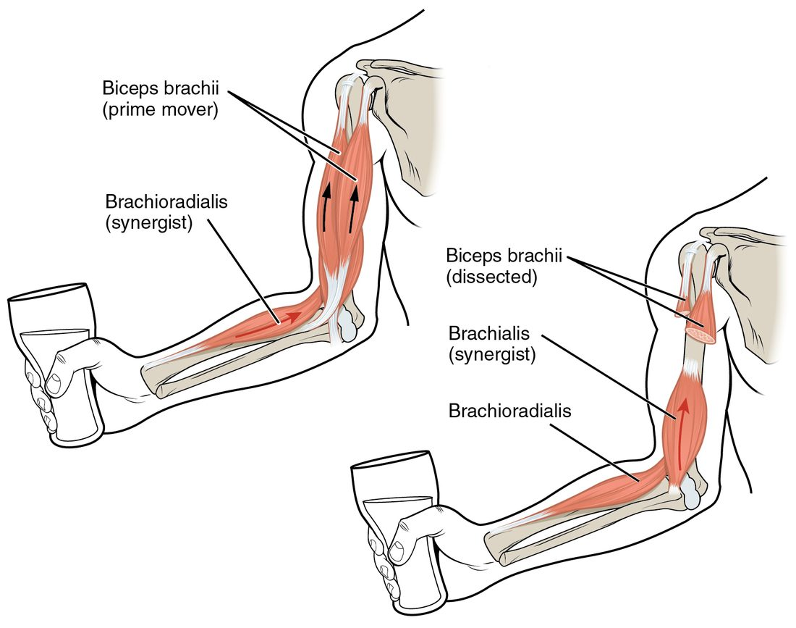

A muscle can only do one thing: pull. Every movement you make, from lifting a cup to kicking a ball, comes from muscles pulling on bones across joints. This page explains how that works: the origin and insertion of a muscle, the jobs muscles take in a movement (agonist, antagonist, synergist and fixator), how bones and joints act as levers, how a muscle's fascicles are arranged, and how to decode a muscle's name. The next four topics use all of this to go through the body's major muscles region by region.
Muscles only pull
Hold a book in your palm and slowly bend your elbow. You can feel the front of your upper arm go hard. Now straighten your elbow against resistance, pressing your palm down on a table. The front relaxes and the back of your upper arm goes hard instead.
That is the rule for all skeletal muscle. A muscle fiber can shorten and pull, but it cannot push. When the cross-bridges stop cycling, the fiber simply stops pulling. So every joint that bends one way needs a second muscle, or gravity, to bring it back. Muscles work in opposing sets.
Origin, insertion and belly
Most skeletal muscles cross at least one joint and attach to a bone at each end. The attachments are made by tendons (or by flat sheets called aponeuroses), which are the continuation of the muscle's own connective tissue wrappings: the endomysium, perimysium and epimysium all merge into the tendon, and the tendon's collagen merges into the bone's periosteum.
- The origin (origo = beginning) is the attachment that stays still when the muscle contracts. It is usually the proximal attachment, closer to the trunk, on the more stable bone.
- The insertion (in- = into, serere = to join) is the attachment on the bone that moves. It is usually distal.
- The belly is the thick, fleshy middle part of the muscle, between the two ends.
When the muscle contracts, it pulls the insertion toward the origin. Look at the muscle shapes in Figure 1: the spindle-shaped muscle on the left is labeled with its belly and the tendons running to its origin and insertion.

Origin and insertion can swap
"Origin" and "insertion" describe the usual case, not a fixed rule. Do a pull-up. The same muscle that bends your elbow when you lift a cup now pulls your trunk up toward your fixed hands. The forearm has become the stable end and the upper arm moves. Anatomists call this a reverse action. Textbooks still name the attachments by the usual case, so the origin stays the proximal attachment on paper.
The jobs muscles take in a movement
Lifting a glass of water to your mouth takes several muscles, each doing a different job. Figure 2 shows it at the elbow.

- The prime mover, also called the agonist (agon = contest), is the muscle most responsible for a movement. Here it is the large muscle on the front of your upper arm.
- A synergist (syn- = together, erg- = work) helps the prime mover make the same movement, adds force, or steadies the movement so it goes in the right direction. Here, a muscle lying under the front upper-arm muscle and a muscle running along the thumb side of your forearm both help bend the elbow.
- The antagonist (anti- = against) produces the opposite movement. Here it is the muscle on the back of your upper arm, which straightens the elbow.
- A fixator is a synergist that holds a bone still so the prime mover has a stable base to pull from. Here, the muscles around your shoulder blade hold the scapula steady. Without them, the pull on the arm would drag the scapula forward instead of lifting the glass.
The antagonist is not switched off
When the prime mover contracts, its antagonist relaxes and is stretched. It does not always go completely slack. Lower a heavy glass slowly and the muscle on the front of your arm keeps working while it lengthens: an eccentric contraction that brakes the movement against gravity. Antagonists do the same at the end of fast movements, slowing the limb so you do not jam the joint.
Roles belong to movements, not muscles
A muscle's role depends on the movement. The back-of-arm muscle is the antagonist when you bend the elbow and the prime mover when you straighten it. So never learn "muscle X is a synergist" as a fixed fact. Learn "muscle X is a synergist for elbow flexion".
| Bending the elbow (flexion) | Straightening the elbow (extension) | |
|---|---|---|
| Prime mover (agonist) | Large muscle on the front of the upper arm | Muscle on the back of the upper arm |
| Antagonist | Muscle on the back of the upper arm | Large muscle on the front of the upper arm |
| Synergists | Muscle beneath the front muscle; muscle on the thumb side of the forearm | A small muscle behind the elbow |
| Fixators | Muscles that steady the scapula and shoulder | Muscles that steady the scapula and shoulder |
The same pairing shows up at every joint: the muscles that flex the knee are the antagonists of the muscles that extend it, the muscles that abduct the hip oppose those that adduct it, and so on. The next four topics name each pair.
Bones and joints as levers
A lever is a rigid bar that turns around a fixed pivot point, the fulcrum (fulcire = to prop up). In your body, a bone is the bar, the joint is the fulcrum, the muscle's pull at its insertion is the effort, and whatever is being moved (the weight of the body part plus anything it holds) is the load. There are three classes of lever, set by which of the three sits in the middle (Figure 3).
First-class lever
In a first-class lever, the fulcrum sits between the effort and the load, like a seesaw. Your head is balanced on the atlanto-occipital joint. The face is heavier than the back of the skull, so the load is in front of the joint. Muscles at the back of the neck pull down behind the joint, tipping the head back. Straightening the elbow is a second example: the muscle on the back of the upper arm pulls on the olecranon, behind the elbow joint, and the load is the forearm and hand in front of it.
Second-class lever
In a second-class lever, the load sits between the fulcrum and the effort, like a wheelbarrow. The standard example is rising onto your toes. The ball of the foot (the metatarsophalangeal joints) is the fulcrum, your body weight comes down through the tibia onto the talus in the middle of the foot, and the calf muscles pull up on the calcaneus at the back. Second-class levers are rare in the body.
Third-class lever
In a third-class lever, the effort sits between the fulcrum and the load, like a pair of tweezers or a fishing rod. Bending the elbow is the classic case. The elbow is the fulcrum, the load is in your hand, and the front upper-arm muscle inserts on the radius a few centimeters from the elbow, between the two. Closing your jaw is another: the jaw joint is the fulcrum, the chewing muscles attach partway along the mandible, and the food between your front teeth is the load. Most levers in your body are third-class.
| First class | Second class | Third class | |
|---|---|---|---|
| In the middle | Fulcrum | Load | Effort |
| Everyday example | Seesaw, scissors | Wheelbarrow, nutcracker | Tweezers, fishing rod |
| Body example | Nodding the head at the atlanto-occipital joint; straightening the elbow | Rising onto the toes | Bending the elbow; closing the jaw |
| Effort arm vs load arm | Either can be longer | Effort arm always longer | Effort arm always shorter |
| What it favors | Depends on where the fulcrum sits | Force: moves a big load with a smaller pull | Speed and range: the load moves far and fast, but the muscle must pull hard |
| How common in the body | A few | Rare | Most |
Force, speed and range: the lever arms
The distance from the fulcrum to the point where the muscle pulls is the effort arm. The distance from the fulcrum to the load is the load arm. For the lever to balance, the effort times the effort arm has to equal the load times the load arm. The ratio effort arm ÷ load arm is the lever's mechanical advantage. Above 1, the muscle can lift more than it pulls. Below 1, the muscle must pull harder than the load, but the load moves farther and faster than the insertion does.
Worked example: holding a weight with the elbow bent. You hold a 40-newton weight (about 4 kg) in your hand with your elbow bent at a right angle. The front upper-arm muscle inserts 4 cm from the elbow joint. Your hand is 32 cm from the elbow. How hard must the muscle pull? (Ignore the weight of the forearm itself.)
- Identify the parts. Fulcrum: the elbow. Effort: the muscle's pull at its insertion. Load: the weight in the hand. The effort sits between the fulcrum and the load, so this is a third-class lever.
- Write the balance rule: effort × effort arm = load × load arm.
- Fill in the numbers: effort × 4 cm = 40 N × 32 cm = 1,280 N·cm.
- Solve: effort = 1,280 ÷ 4 = 320 N.
- Mechanical advantage = effort arm ÷ load arm = 4 ÷ 32 = 0.125. The muscle pulls 8 times harder than the weight it holds.
- The trade-off: when the insertion moves 1 cm, the hand moves 8 cm in the same moment. The arm gives up force to gain range and speed.
That trade-off explains why most body levers are third-class. A muscle fiber can only shorten by about a third of its length, and it does so slowly compared with a thrown ball. Attaching close to the joint turns a short, slow, powerful pull into a long, fast sweep of the hand or foot. The cost is that muscles and tendons carry forces many times the weight you hold, which is one reason tendons tear under heavy lifting.
Fascicle arrangement
Each muscle is built from fascicles, the bundles of muscle fibers wrapped in perimysium. How those fascicles run relative to the tendon shapes the whole muscle and sets its trade-off between force and range. Match each arrangement to its example in Figure 1.
- Parallel: fascicles run the length of the muscle, side by side, in line with the pull. A parallel muscle can be strap-like, the same width all the way along, like the long thin muscle that runs diagonally across the front of the thigh. A fusiform muscle (fusus = spindle) is a parallel muscle with a thick belly that tapers at each end, like the large muscle on the front of the upper arm.
- Convergent: fascicles fan out from a single tendon over a broad origin, like the large fan-shaped muscle of the chest. A convergent muscle can pull in several directions, depending on which fascicles fire.
- Pennate (penna = feather): short fascicles attach at an angle to a tendon that runs the length of the muscle, like the barbs of a feather. A unipennate muscle has fascicles on one side of the tendon, a bipennate muscle on both sides, and a multipennate muscle has several tendons with fascicles converging on them from many angles, like the thick muscle that caps the shoulder.
- Circular: fascicles run in rings around an opening. A circular muscle closes the opening when it contracts. When it guards an opening, it is called a sphincter (sphingein = to bind tight), like the ring of muscle around your mouth.
Why the arrangement matters
Two rules follow from the geometry.
- Pennate muscles are stronger for their size. Short fibers set at an angle let many more fibers pack into the same volume. More fibers side by side means more cross-bridges pulling at once, so more force.
- Parallel muscles shorten farther and faster. Long fibers running in line with the pull have more sarcomeres in series. Each sarcomere shortens a little at the same time, so a longer chain shortens a longer distance in the same time.
So a muscle built for power, like the thick front thigh muscles that straighten your knee as you stand up, tends to be pennate. A muscle built for a long, quick sweep tends to be parallel.
| Parallel (strap or fusiform) | Pennate (uni-, bi- or multipennate) | |
|---|---|---|
| Fascicle direction | In line with the pull | At an angle to a central tendon |
| Fiber length | Long | Short |
| Fibers per volume | Fewer | More |
| Force for its size | Lower | Higher |
| Distance and speed of shortening | Greater | Smaller |
How muscles are named
Muscle names look like Latin tongue-twisters, but almost every one is a short description built from a few word parts. Take abductor digiti minimi: abductor (moves away from the midline), digiti (of the digit), minimi (the smallest). It is the muscle that abducts the little finger. Once you know the word parts, most names explain themselves. Names use seven kinds of clue.
| Clue | Word parts | Example |
|---|---|---|
| Location | pectoral- (chest), brachi- (arm), femor- (thigh), glute- (buttock), tibi- (shin), temporal- (temple), abdomin- (belly), dorsi (of the back) | Many muscles are named for the bone or region they lie over |
| Shape | delt- (triangle, like the Greek letter delta, Δ), trapez- (trapezoid, a four-sided table shape), rhomb- (diamond), serratus (saw-toothed), orbicularis (small circle), teres (round) | A triangular muscle takes the root delt- |
| Size | maximus (largest), minimus (smallest), major (larger), minor (smaller), longus (long), brevis (short), vastus (huge), latissimus (widest) | Abductor digiti minimi: to the smallest finger |
| Direction of fascicles | rectus (straight, parallel to the midline), transversus (across), oblique (slanted) | A muscle whose fascicles run straight up and down is "rectus" |
| Number of origins | -ceps (heads): biceps (two), triceps (three), quadriceps (four) | A muscle with three heads is a triceps |
| Attachments | Origin first, then insertion | Sternohyoid: from the sternum to the hyoid bone |
| Action | flexor, extensor, abductor, adductor, levator (lifts), depressor (lowers), pronator (turns the palm down), rotator, tensor (tightens) | Levator scapulae lifts the scapula; flexor pollicis longus is the long flexor of the thumb (pollex) |
Most names combine two or three clues. Decode them in order: what it does, where, and any size or shape word. The next four topics give you plenty of practice.
Summary
Skeletal muscles only pull. Each pulls its insertion, on the bone that moves, toward its origin, on the bone that stays still; the belly is the fleshy middle, and origin and insertion can swap in a reverse action. In a movement, the prime mover (agonist) does most of the work, synergists help, fixators hold the base steady, and the antagonist makes the opposite movement and often brakes it. Bones act as levers turning at joints: first-class levers have the fulcrum in the middle, second-class the load, third-class the effort. Most body levers are third-class, trading force for speed and range, so muscles pull many times harder than the load they move. Fascicles can be parallel (strap or fusiform), convergent, pennate (uni-, bi- or multipennate) or circular (a sphincter); pennate muscles are stronger for their size, parallel ones shorten farther and faster. Muscle names describe location, shape, size, fascicle direction, number of heads, attachments and action.